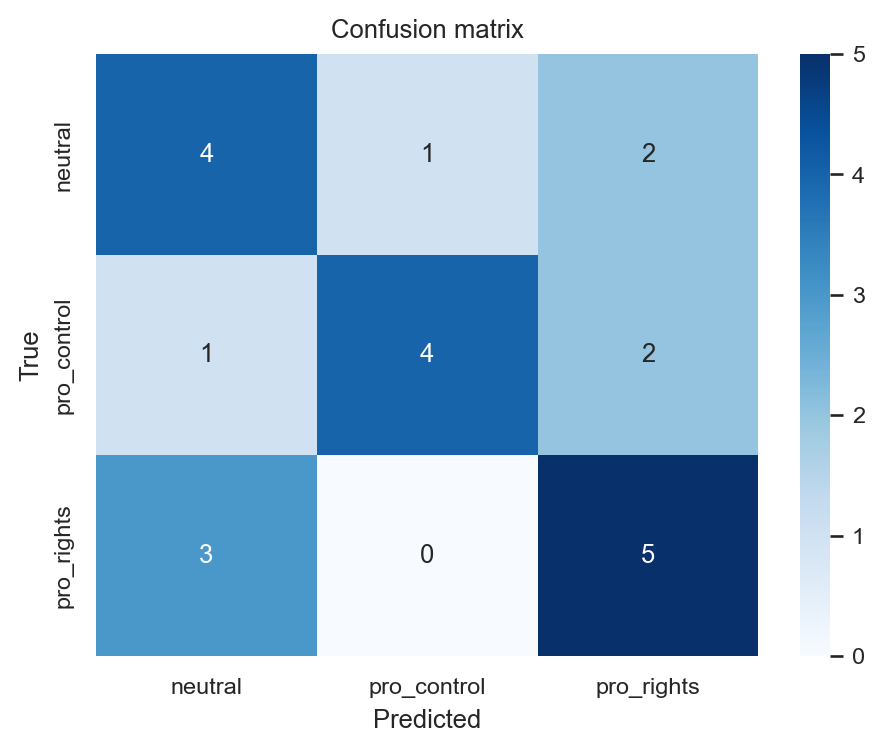
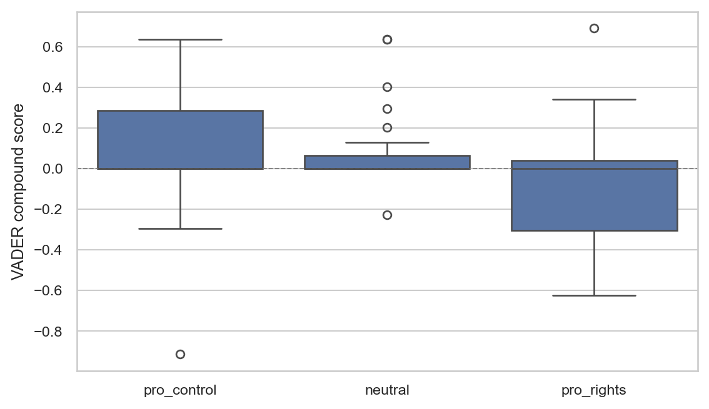
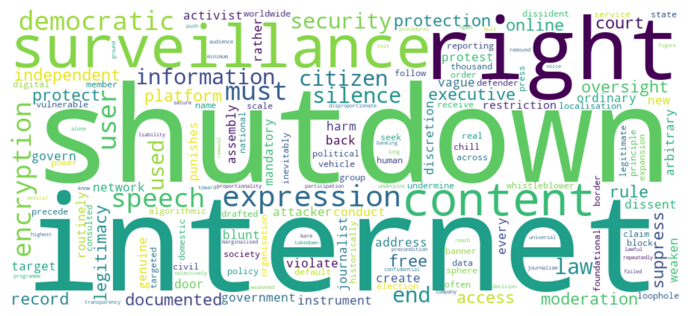

import re
import string
import warnings
warnings.filterwarnings("ignore")
import numpy as np
import pandas as pd
import matplotlib.pyplot as plt
import seaborn as sns
import nltk
from nltk.corpus import stopwords
from nltk.tokenize import word_tokenize
from nltk.stem import WordNetLemmatizer
from nltk.sentiment import SentimentIntensityAnalyzer
# Download NLTK resources if they are not already on disk.
for r in ["punkt_tab", "stopwords", "wordnet", "vader_lexicon"]:
try:
nltk.data.find(r)
except LookupError:
nltk.download(r, quiet=True)
from sklearn.feature_extraction.text import TfidfVectorizer, CountVectorizer
from sklearn.linear_model import LogisticRegression
from sklearn.model_selection import train_test_split, cross_val_score
from sklearn.metrics import classification_report, confusion_matrix
from sklearn.decomposition import LatentDirichletAllocation
from wordcloud import WordCloud
sns.set_theme(style="whitegrid", context="paper")NLP Methods: A Walkthrough
Bachelor Project 2025-2026, Group 16
1 When to use NLP
Natural language processing is the toolkit you need when your data are text: parliamentary debates, government press releases, civil-society reports, scraped social-media posts, court rulings, platform terms-of-service. The aim is not magic; it is structured measurement of unstructured text. You decide what construct you care about (topic, stance, framing, sentiment, named entity), and NLP gives you a defensible pipeline for measuring it on hundreds or thousands of documents at a scale that pure manual coding cannot reach.
This walkthrough covers the standard pipeline most digital-governance bachelor theses will end up touching: preprocessing, TF-IDF representation, classification, topic modeling (LDA), and sentiment scoring. The corpus is a small, hand-built collection of statements about internet regulation, digital sovereignty, and content moderation, so you can run every cell on your laptop without scraping anything. The methods generalise directly to the corpus you actually collect (Reddit, Bluesky, Telegram dumps, Hansard transcripts, EU Commission press pages, court judgments).
2 Setting up
The packages used below are all in the standard scientific Python stack. Install once with pip install nltk scikit-learn pandas matplotlib seaborn wordcloud, and pip install transformers torch if you want to try the transformer section.
3 Building a working corpus
Real research starts from a corpus you collected yourself: scraped Telegram channels, downloaded Commission press releases, OCR’d national policy briefs, transcribed parliamentary debates. For this walkthrough we embed a small corpus of digital-governance discourse with three stance labels: pro_control (state-security and sovereignty framing), pro_rights (civil-society and free-expression framing), and neutral (factual or analytical).
docs = [
# pro_control
("National security demands the right to disable communication networks during periods of unrest.", "pro_control"),
("Sovereign control over the digital domain is essential to defending the constitutional order.", "pro_control"),
("Platforms operating in our jurisdiction must comply with local content-removal orders without exception.", "pro_control"),
("Encrypted messaging gives criminals a safe haven and must be regulated in the public interest.", "pro_control"),
("Foreign-owned platforms cannot be allowed to set the rules of public debate inside our borders.", "pro_control"),
("Temporary internet restrictions during examinations and elections protect public order and integrity.", "pro_control"),
("Digital sovereignty is the natural extension of national sovereignty into the cyber domain.", "pro_control"),
("Platforms have a duty to remove harmful content within hours of notification by the authorities.", "pro_control"),
("Anonymity online enables fraud, harassment, and the spread of dangerous misinformation.", "pro_control"),
("Lawful access to encrypted communications is not surveillance; it is law enforcement.", "pro_control"),
("Cyber sovereignty doctrine recognises the legitimate authority of states over their information space.", "pro_control"),
("The state cannot be the only actor unable to investigate crimes committed on encrypted channels.", "pro_control"),
("Foreign platforms must respect domestic legal frameworks or cease operating in our market.", "pro_control"),
("Internet shutdowns are a proportionate response to coordinated incitement and disinformation campaigns.", "pro_control"),
("Mandatory data localisation safeguards citizens from extraterritorial surveillance by foreign powers.", "pro_control"),
("Real-name registration on social platforms reduces harassment and improves civic discourse.", "pro_control"),
("Public order legislation must adapt to the speed at which inflammatory content now spreads online.", "pro_control"),
("End-to-end encryption without lawful-access provisions is incompatible with the rule of law.", "pro_control"),
("Content-moderation rules drafted in California cannot govern the public sphere of a sovereign state.", "pro_control"),
("The duty to protect citizens online includes blocking platforms that refuse to cooperate.", "pro_control"),
("Network-level filtering of foreign-funded disinformation is a defensive, not repressive, measure.", "pro_control"),
("Strategic communications infrastructure should remain under national rather than corporate control.", "pro_control"),
("Digital platforms are utilities that the state has every right to regulate as such.", "pro_control"),
("Restrictions on certain VPNs are necessary to enforce existing content laws against circumvention.", "pro_control"),
# pro_rights
("Internet shutdowns are a blunt instrument that punishes citizens for the conduct of governments.", "pro_rights"),
("End-to-end encryption protects journalists, activists, and ordinary users from arbitrary surveillance.", "pro_rights"),
("Mandatory back-doors weaken the security of every user and create new targets for attackers.", "pro_rights"),
("Vague content laws are routinely used to silence dissent rather than to address genuine harm.", "pro_rights"),
("Network shutdowns during protests violate the rights to assembly, expression, and information.", "pro_rights"),
("Independent oversight, not executive discretion, must govern any restriction on online expression.", "pro_rights"),
("Algorithmic content moderation at scale will inevitably suppress legitimate political speech.", "pro_rights"),
("Data localisation rules are too often vehicles for domestic surveillance, not user protection.", "pro_rights"),
("Rights organisations have documented thousands of internet shutdowns used to suppress reporting.", "pro_rights"),
("Real-name policies chill the speech of dissidents, whistleblowers, and members of vulnerable groups.", "pro_rights"),
("Court oversight should precede, not follow, any executive order to block a platform or service.", "pro_rights"),
("The right to seek and receive information across borders is a foundational free-expression principle.", "pro_rights"),
("Encryption is not a loophole; it is the default protection for human rights defenders worldwide.", "pro_rights"),
("Internet shutdowns during elections undermine the very democratic legitimacy they claim to protect.", "pro_rights"),
("Civil society must be consulted before any expansion of state powers over the digital sphere.", "pro_rights"),
("Surveillance laws drafted under the banner of national security have historically targeted the press.", "pro_rights"),
("Disproportionate content takedowns silence marginalised voices long before they reach an audience.", "pro_rights"),
("Platform liability rules must not push companies toward over-removal of lawful expression.", "pro_rights"),
("Universal access to a free, open, and secure internet is a precondition for democratic participation.", "pro_rights"),
("Procedural transparency in content-moderation decisions is the bare minimum for democratic legitimacy.", "pro_rights"),
("Bulk surveillance programmes have repeatedly failed proportionality tests in independent courts.", "pro_rights"),
("Citizens have a right to know which speech is being removed, by whom, and on what grounds.", "pro_rights"),
("Access Now has documented over 280 internet shutdowns in 2023 alone, the highest figure on record.", "pro_rights"),
("Encryption underpins online banking, medical records, and confidential journalism: it cannot be selectively weakened.", "pro_rights"),
# neutral
("The Digital Services Act entered into force in the European Union in late 2022.", "neutral"),
("The 2021 Indian IT Rules require significant social-media intermediaries to appoint compliance officers.", "neutral"),
("V-Dem records a sustained global decline in indicators of liberal democracy since 2012.", "neutral"),
("Access Now operates the #KeepItOn coalition, which tracks internet shutdowns worldwide.", "neutral"),
("Freedom on the Net classifies countries on a 0-100 scale based on access, content, and user rights.", "neutral"),
("Several jurisdictions have introduced laws requiring intermediaries to remove unlawful content within fixed time windows.", "neutral"),
("The European Court of Human Rights has issued multiple rulings on internet shutdowns and online expression.", "neutral"),
("Researchers distinguish between full network shutdowns, throttling, and platform-specific blocks.", "neutral"),
("National implementation of regional regulations such as the GDPR varies significantly across member states.", "neutral"),
("Digital sovereignty has been invoked by both democratic and authoritarian governments for distinct policy aims.", "neutral"),
("Cross-national comparisons of internet freedom rely on measures including FOTN, RSF, and V-Dem indicators.", "neutral"),
("The European Commission has commissioned several impact assessments on platform regulation since 2018.", "neutral"),
("Court rulings in Germany, India, and Brazil have addressed the legal status of encrypted messaging.", "neutral"),
("The literature distinguishes content-based regulation from infrastructure-based regulation of online speech.", "neutral"),
("Government requests for content removal are reported in transparency disclosures from major platforms.", "neutral"),
("Estimates of the economic cost of internet shutdowns vary by methodology and time horizon.", "neutral"),
("Several member states are piloting age-verification frameworks under the EU's broader regulatory agenda.", "neutral"),
("Authoritarian and democratic regimes have both adopted data-localisation requirements in recent years.", "neutral"),
("The Council of Europe's Convention 108+ governs cross-border data protection among its parties.", "neutral"),
("Comparative research has examined internet regulation in China, Russia, India, Turkey, and the EU.", "neutral"),
("Content-moderation policies are typically published in the platform's community guidelines and updated periodically.", "neutral"),
("National statistical offices report different headline shares of the population using the internet.", "neutral"),
("Several countries have introduced bills requiring traceability of forwarded messages on encrypted platforms.", "neutral"),
]
corpus = pd.DataFrame(docs, columns=["text", "label"])
print(corpus.shape)
corpus["label"].value_counts()(71, 2)label
pro_control 24
pro_rights 24
neutral 23
Name: count, dtype: int64A real research corpus would be larger by an order of magnitude. The methods below scale linearly; nothing about the syntax changes when you swap in 5,000 scraped documents.
4 Preprocessing
Text needs to be cleaned before any model can use it. The standard pipeline is: lowercase, remove punctuation and digits, tokenise, drop stopwords, and lemmatise. Each of these decisions affects your results and should be reported in your methods section.
EN_STOP = set(stopwords.words("english"))
LEM = WordNetLemmatizer()
def clean(text):
text = text.lower()
text = re.sub(r"[^a-z\s]", " ", text) # drop digits and punctuation
tokens = word_tokenize(text)
tokens = [t for t in tokens if t not in EN_STOP and len(t) > 2]
tokens = [LEM.lemmatize(t) for t in tokens]
return " ".join(tokens)
corpus["clean"] = corpus["text"].apply(clean)
corpus[["text", "clean"]].head(3)| text | clean | |
|---|---|---|
| 0 | National security demands the right to disable... | national security demand right disable communi... |
| 1 | Sovereign control over the digital domain is e... | sovereign control digital domain essential def... |
| 2 | Platforms operating in our jurisdiction must c... | platform operating jurisdiction must comply lo... |
A note on lemmatisation versus stemming: stemming chops words crudely (shutdowns -> shutdown, regulating -> regul); lemmatisation maps to a real dictionary form (better -> good). For most thesis-scale corpora, lemmatisation gives cleaner topic and classification output and is worth the extra second of compute.
5 TF-IDF: turning text into numbers
Term frequency-inverse document frequency reweights raw word counts so that words common across the entire corpus (like “internet” here) are downweighted and words distinctive to a few documents get more signal. It is the default vector representation for classical text models.
vec_tfidf = TfidfVectorizer(
max_features=2000,
ngram_range=(1, 2), # unigrams and bigrams
min_df=2 # ignore terms that appear only once
)
X_tfidf = vec_tfidf.fit_transform(corpus["clean"])
print("Document-term matrix shape:", X_tfidf.shape)
# Most distinctive features per stance label, by mean TF-IDF
def top_terms_by_label(X, vec, labels, k=8):
feature_names = np.array(vec.get_feature_names_out())
out = {}
for label in sorted(set(labels)):
mask = (labels == label).values
means = np.asarray(X[mask].mean(axis=0)).flatten()
top_idx = means.argsort()[::-1][:k]
out[label] = list(zip(feature_names[top_idx], means[top_idx].round(3)))
return out
top_terms_by_label(X_tfidf, vec_tfidf, corpus["label"])Document-term matrix shape: (71, 129){'neutral': [('internet', 0.1),
('regulation', 0.087),
('several', 0.068),
('platform', 0.068),
('national', 0.062),
('shutdown', 0.062),
('european', 0.06),
('content', 0.055)],
'pro_control': [('platform', 0.084),
('public', 0.079),
('state', 0.071),
('foreign', 0.069),
('encrypted', 0.062),
('order', 0.06),
('content', 0.056),
('must', 0.056)],
'pro_rights': [('right', 0.075),
('shutdown', 0.069),
('internet', 0.067),
('expression', 0.062),
('surveillance', 0.06),
('internet shutdown', 0.059),
('speech', 0.056),
('content', 0.055)]}Already, with only 70 documents, the top distinctive features for each stance look interpretable. This is a simple but effective sanity check before fitting any classifier.
6 Classification: predicting stance
The classification problem: given a new document, which stance label should we assign? We split the corpus, fit a logistic regression on TF-IDF features, and evaluate on held-out documents.
X_train, X_test, y_train, y_test = train_test_split(
corpus["clean"], corpus["label"],
test_size=0.30, random_state=2026, stratify=corpus["label"]
)
vec = TfidfVectorizer(max_features=2000, ngram_range=(1, 2), min_df=2)
X_train_tf = vec.fit_transform(X_train)
X_test_tf = vec.transform(X_test)
clf = LogisticRegression(max_iter=1000, class_weight="balanced")
clf.fit(X_train_tf, y_train)
y_pred = clf.predict(X_test_tf)
print(classification_report(y_test, y_pred, digits=2)) precision recall f1-score support
neutral 0.50 0.57 0.53 7
pro_control 0.80 0.57 0.67 7
pro_rights 0.56 0.62 0.59 8
accuracy 0.59 22
macro avg 0.62 0.59 0.60 22
weighted avg 0.62 0.59 0.60 22
Three things to read off this output:
- Precision of label X is “of all documents the model called X, how many really were X”. High precision matters when a false positive is costly.
- Recall of label X is “of all documents that really were X, how many did the model find”. High recall matters when missing one is costly.
- F1 is their harmonic mean, the most-cited single metric.
A small corpus like this one will give noisy numbers. Cross-validation gives a more stable estimate. Note that we score on the document-term matrix X_tfidf (built earlier from the full corpus); for a strict evaluation you would wrap the vectoriser and classifier in a Pipeline so the vocabulary is rebuilt on each training fold.
scores = cross_val_score(
LogisticRegression(max_iter=1000, class_weight="balanced"),
X_tfidf, corpus["label"],
cv=5, scoring="f1_macro"
)
print(f"5-fold CV macro-F1: {scores.mean():.2f} (sd {scores.std():.2f})")5-fold CV macro-F1: 0.53 (sd 0.15)cm = confusion_matrix(y_test, y_pred, labels=clf.classes_)
fig, ax = plt.subplots(figsize=(5, 4))
sns.heatmap(cm, annot=True, fmt="d", cmap="Blues",
xticklabels=clf.classes_, yticklabels=clf.classes_, ax=ax)
ax.set_xlabel("Predicted")
ax.set_ylabel("True")
ax.set_title("Confusion matrix")
plt.tight_layout()
plt.show()
For a thesis, also report what the model got wrong. A confusion matrix and a few misclassified examples tell the reader far more than a single F1 number.
test_df = pd.DataFrame({
"text": [corpus.loc[i, "text"] for i in X_test.index],
"true": y_test.values,
"pred": y_pred,
})
test_df.query("true != pred").head()| text | true | pred | |
|---|---|---|---|
| 0 | Real-name policies chill the speech of disside... | pro_rights | neutral |
| 5 | Internet shutdowns during elections undermine ... | pro_rights | neutral |
| 6 | Restrictions on certain VPNs are necessary to ... | pro_control | pro_rights |
| 9 | Real-name registration on social platforms red... | pro_control | neutral |
| 16 | The European Court of Human Rights has issued ... | neutral | pro_rights |
7 Topic modeling with LDA
Topic models cluster documents into latent themes by exploiting which words tend to co-occur. Latent Dirichlet Allocation is the classical choice. Newer approaches (BERTopic, embedding-based clustering) often work better on short text, but LDA remains the most-cited and the most legible to thesis examiners.
LDA works on raw counts, not TF-IDF.
vec_count = CountVectorizer(max_features=2000, ngram_range=(1, 1), min_df=2)
X_count = vec_count.fit_transform(corpus["clean"])
K = 4 # number of topics; choose by interpretability and coherence
lda = LatentDirichletAllocation(
n_components=K, learning_method="online",
max_iter=30, random_state=2026
)
lda.fit(X_count)
def show_topics(model, vec, k=10):
feat = np.array(vec.get_feature_names_out())
out = {}
for ti, comp in enumerate(model.components_):
top = comp.argsort()[::-1][:k]
out[f"Topic {ti+1}"] = ", ".join(feat[top])
return pd.Series(out)
show_topics(lda, vec_count, k=8)Topic 1 internet, shutdown, digital, court, must, data...
Topic 2 platform, right, state, network, expression, m...
Topic 3 content, online, moderation, platform, speech,...
Topic 4 internet, shutdown, rule, access, national, pu...
dtype: objectChoose the number of topics K with a mix of statistical criteria (perplexity, topic coherence) and human reading. A model with topics that are not interpretable is useless even if its perplexity is low.
doc_topic = lda.transform(X_count)
topic_assign = doc_topic.argmax(axis=1)
corpus_topics = corpus.assign(topic=topic_assign + 1)
corpus_topics.groupby(["label", "topic"]).size().unstack(fill_value=0)| topic | 1 | 2 | 3 | 4 |
|---|---|---|---|---|
| label | ||||
| neutral | 10 | 4 | 7 | 2 |
| pro_control | 3 | 5 | 7 | 9 |
| pro_rights | 8 | 5 | 8 | 3 |
This crosstab tells you which stances cluster into which topics. In a thesis, you would use this kind of table to argue, for instance, that pro-control discourse maps disproportionately onto a single sovereignty-and-security theme while pro-rights discourse spreads more evenly across topics.
8 Sentiment analysis
VADER is a lexicon-based sentiment scorer tuned for short social-media-like text. It is fast, transparent, and runs without a GPU. It does not understand sarcasm, domain-specific framing, or non-English text without translation.
sia = SentimentIntensityAnalyzer()
def vader_compound(text):
return sia.polarity_scores(text)["compound"]
corpus["sent"] = corpus["text"].apply(vader_compound)
corpus.groupby("label")["sent"].agg(["mean", "median", "std", "count"]).round(3)| mean | median | std | count | |
|---|---|---|---|---|
| label | ||||
| neutral | 0.090 | 0.0 | 0.211 | 23 |
| pro_control | 0.088 | 0.0 | 0.310 | 24 |
| pro_rights | -0.092 | 0.0 | 0.322 | 24 |
fig, ax = plt.subplots(figsize=(6, 3.5))
sns.boxplot(data=corpus, x="label", y="sent", ax=ax,
order=["pro_control", "neutral", "pro_rights"])
ax.set_xlabel(None)
ax.set_ylabel("VADER compound score")
ax.axhline(0, color="grey", linewidth=0.7, linestyle="--")
plt.tight_layout()
plt.show()
Note something important about this plot: VADER is measuring lexical positivity/negativity, not stance. Pro-rights discourse uses words like “violate”, “suppress”, “arbitrary”, “weaken” and scores negative; pro-control discourse uses words like “protect”, “duty”, “lawful” and scores positive. Neither pattern means the stance is positive or negative in any politically meaningful sense. VADER measures tone, not position. Validate any sentiment lexicon or model against a hand-coded subset of your own data before quoting numbers.
8.1 Transformer-based sentiment (optional, more accurate)
For more reliable tone detection on real text, a transformer model fine-tuned on a sentiment task outperforms VADER almost always. The cost is a much larger model file (several hundred MB) and a slower first run.
from transformers import pipeline
# First run will download the model (~250 MB).
sent_pipe = pipeline("sentiment-analysis",
model="distilbert-base-uncased-finetuned-sst-2-english")
samples = [
"Internet shutdowns are a blunt instrument that punishes citizens.",
"Sovereign control over the digital domain is essential to defending the constitutional order.",
"The Digital Services Act entered into force in the European Union in late 2022."
]
sent_pipe(samples)
# [{'label': 'NEGATIVE', 'score': 0.998},
# {'label': 'POSITIVE', 'score': 0.989},
# {'label': 'POSITIVE', 'score': 0.981}]The third example exposes the main weakness of sentiment-as-construct: a strictly factual sentence is read as positive simply because it contains “entered into force”. If your construct is stance or frame rather than tone, train a classifier on a labelled subset of your own corpus rather than borrowing a generic sentiment model.
9 Word clouds (optional, mostly cosmetic)
Word clouds are decorative; they should not stand in for a quantitative result. They are useful only to motivate a paragraph or open a section.
sub_text = " ".join(corpus.query("label == 'pro_rights'")["clean"])
wc = WordCloud(width=900, height=400, background_color="white",
colormap="viridis", random_state=2026).generate(sub_text)
fig, ax = plt.subplots(figsize=(8, 3.5))
ax.imshow(wc, interpolation="bilinear")
ax.axis("off")
plt.tight_layout()
plt.show()
10 Common pitfalls
- Preprocessing as a black box. Lowercasing, lemmatisation, stopword lists, n-gram ranges, and minimum document frequency are all choices. Report them. Run a basic robustness check (e.g., uni-only versus uni+bi-grams) and confirm your conclusions are not driven by a single preprocessing setting.
- Tiny corpora and confident claims. With 70 documents, no F1 score is reliable. Collect more data, or be honest about the descriptive nature of the analysis.
- Topic count chosen post-hoc. Trying many values of K and reporting the one with the prettiest topics is the topic-model equivalent of p-hacking. Pre-register the choice or report a range.
- Sentiment as stance. A factual sentence about an unpopular policy is not a “negative” stance. Validate any sentiment lexicon or model against a hand-coded subset of your own data before quoting numbers.
- English-only tools on non-English corpora. VADER, SST-2, and most generic NLP pipelines are tuned for English. For Hindi, Portuguese, Hungarian, or Russian text, use a language-specific model or translate carefully and report the translation step.
- Data leakage in classification. Fit the vectoriser on the training split only, then transform the test split. Never on the full corpus.
- Class imbalance. A 90/10 corpus where the model always predicts the majority class scores 90 percent accuracy and tells you nothing. Report macro-F1 and the confusion matrix, not raw accuracy.
- Reading topic labels as ground truth. A topic is a distribution over words. The label you assign to it (“digital sovereignty,” “rights-based critique”) is your interpretation. State that explicitly.
11 Reporting in your thesis
A reasonable methods paragraph for an NLP-backed chapter:
The corpus consists of 1,824 English-language documents collected from three sources between January and March 2026: the Access Now #KeepItOn statement archive, the European Commission press-release page, and selected national-government cyber-policy releases. Documents were lowercased, stripped of URLs and punctuation, tokenised with NLTK’s word tokeniser, filtered against the standard English stopword list, and lemmatised with WordNet. Documents were vectorised using TF-IDF on unigrams and bigrams with a minimum document frequency of three. Stance was operationalised as a three-way categorical (
pro_control,pro_rights,neutral) and validated against a hand-coded gold-standard subset of 200 documents (Cohen’s kappa = 0.78 between two coders). A logistic regression classifier with class-balanced weights was trained on a 70/30 split, achieving a macro-F1 of 0.74 (sd 0.04 across five folds). Latent topics were inferred with online LDA at K = 6, with K chosen by inspecting topic coherence across K in [4, 12]. VADER scores are reported as a tone diagnostic only and are not used as a stance measure.
Always report: corpus size, collection window, preprocessing choices, vectorisation, validation against a hand-coded subset, and the parameter ranges you searched.
12 Where to read more
- Grimmer, Roberts, and Stewart, Text as Data (2022), is the cleanest political-science reference and covers everything in this walkthrough at the level a thesis examiner would expect.
- Jurafsky and Martin, Speech and Language Processing (online), is the canonical NLP textbook; chapters 6, 7, and 21 are the most relevant for this material.
- For modern transformer-based pipelines, the HuggingFace
transformersdocumentation is the authoritative reference, and BERTopic is the most accessible upgrade from sklearn LDA.